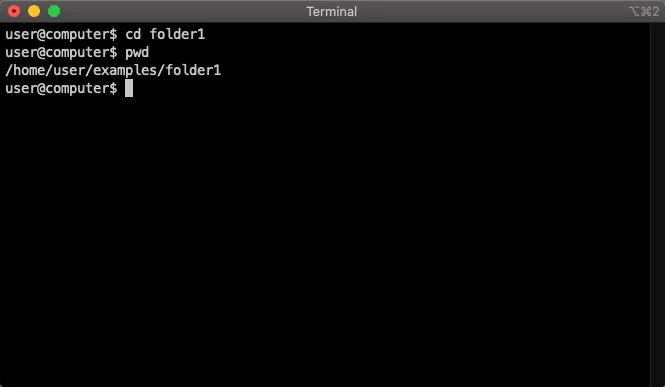
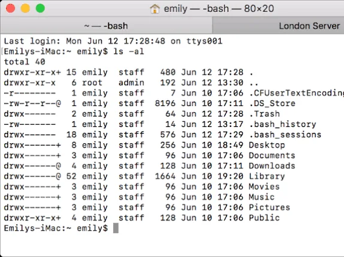
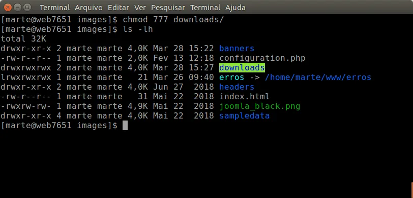

Navegação entre diretórios com cd

Use cd pasta para entrar em um diretório e cd .. para voltar um nível. É essencial para circular pelo sistema de arquivos com rapidez.
Atualizado em .
Conheça comandos Linux para iniciantes e aprenda a usar o terminal em tarefas do dia a dia.
cd
Use cd pasta para entrar em um diretório e cd .. para voltar um nível. É essencial para circular pelo sistema de arquivos com rapidez.
Atualizado em .
ls
O comando ls mostra os itens da pasta atual, enquanto ls -la inclui arquivos ocultos e detalhes como permissões e tamanho.
Atualizado em .
chmod
Com chmod você altera permissões de leitura, escrita e execução. Tenha cuidado ao aplicar permissões amplas: chmod 777 concede acesso total a todos os usuários.
Atualizado em .
| Comando | Função principal | Uso comum |
|---|---|---|
pwd | Mostra o caminho completo da pasta atual | pwd |
ls | Lista arquivos e diretórios | ls -la |
cd | Muda de diretório | cd .. |
mkdir | Cria uma nova pasta | mkdir projeto |
chmod | Altera permissões de arquivos e diretórios | chmod 755 script.sh |
Dúvidas ou sugestões sobre o conteúdo? Entre em contato por e-mail.